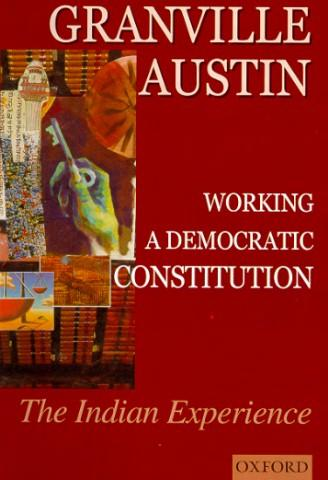

See the Biblio Review (May-June 2000)
New Delhi, Oxford University Press, 1999; second
impression, 2000. ISBN 0195648889
UVa Call number: KNS1750 .A98 2000
|  |
CONTENTS Abbreviations. p. xix Introduction. p. 1 Prologue. p. 4 Part I : The Great Constitutional ThemesEmerge, 1950-66. p. 11 1 SETTLING INTO HARNESS. p. 13 The Broad Context. p. 15 Power Relations and Adjustments. p. 18 The Nehru Years Reviewed. p. 36 2 FREE SPEECH, LIBERTY AND PUBLIC ORDER. p. 38 Freedom of Expression. p. 40 Freedom of Expression: The Sixteenth Amendment. p. 50 Individual Liberty and Preventive Detention. p. 53 Preventive Detention During An Emergency. p. 63 3 THE SOCIAL REVOLUTION AND THE FIRST AMENDMENT. p. 69 The Background. p. 70 The Amendment and Agricultural Property. p. 78 The Amendment and Non-Agricultural Property. p. 92 Removing Man-Made Inequalities. p. 94 4 THE RIGHTS AND THE REVOLUTION: MORE PROPERTY AMENDMENTS. p. 99 The Fourth Amendment. p. 101 The Seventeenth Amendment. p. 110 Democracy and Socialism: The Nehru Years in Retrospect. p. 116 5 THE JUDICIARY: 'QUITE UNTOUCHABLE'. p. 123 Judicial Independence: Appointments. p. 124 Judicial Independence: Other Risks, Other Protections. p.135 The Quality of Justice. p. 138 6 MAKING AND PRESERVING A NATION. p. 143 Forces for Unity. p. 144 Forces Against Unity. p. 148 Constitutional and Sub-Constitutional Mechanisms for Unity. p. 156 |
|
Part II: The Great Constitutional p. 171 7 INDIRA GANDHI: IN CONTEXT AND IN POWER. p. 173 Mrs Gandhi, 'Socialism', and Power. p. 176 An Activist Political Generation. p. 182 The Year of the 'Socialists'. p. 186 The Migration of Power. p. 190 8 THE GOLAK NATH INHERITANCE. p. 196 Sowing the Wind. p. 197 Reaping the Whirlwind. p. 202 9 TWO CATALYTIC DEFEATS. p. 209 Bank Nationalization. p. 209 The Princes and their Purses. p. 220 An Evening of Mystery. p. 227 10 RADICAL CONSTITUTIONAL AMENDMENTS. p. 234 Framing the Amendments Begins. p. 236 Amendments in Parliament: The Twenty-Fourth. p. 243 Positive and Negative Reactions. p. 247 Amendments in Parliament: The Twenty-Fifth. p. 250 Tile Web's Seamlessness Forgotten. p. 253 11 REDEEMING THE WEB: THE KESAVANANDA BHARATI CASE. p. 258 Kesavananda: The Case. p. 260 A Confusing Decision. p. 265 'Unusual Happenings' on the Bench. p. 265 12 A 'GRIEVOUS BLOW': THE SUPERSESSION OF JUDGES. p. 278 The Supersession. p. 279 The Public Rationale. p. 283 Public Reactions. p. 285 A Brief Assessment. p. 289 Part III: Democracy Rescued Or the 13 26JUNE 1975. p. 295 The Culmination of Trends. p. 297 More Immediate Origins. p. 298 Democracy is Extinguished. p. 309 14 CLOSING THE CIRCLE. p. 314 The Indira Gandhi Election Case. p. 314 Tile Protective Amendments. p. 319 Completing the Circle. p. 325 15 THE JUDICIARY UNDER PRESSURE. p. 328 Basic Structure Revisited: The Kesavananda Review Bench. p. 328 An Anonymous Attack. p. 333 The Habeas Corpus Case. p. 334 The Transfer of Judges. p. 344 16 PREPARING FOR CONSTITUTIONAL CHANGE. p. 348 Change Takes Shape. p. 350 The Swaran Singh Committee. p. 353 The Committee As a Puzzle. p. 364 Tile Critics. p. 366 17 THE FORTY-SECOND AMENDMENT: SACRIFICING DEMOCRACY TO POWER. p. 370 The Amendment. p. 371 Who Were Its Authors?. p. 374 Four Mysterious Resolutions. p. 377 The Amendment's Supporters and Opponents. p. 381 Conclusion. p. 388 |
Part IV: The Janata Interlude: Democracy Restored. p. 39118 INDIRA GANDHI DEFEATED-- JANATA FORMS A GOVERNMENT. p. 393 Opposition Attempts at Unity. p. 395 Creating One from Many. p. 400 The Congress Party: Death and Reincarnation. p. 405 19 RESTORING DEMOCRATIC GOVERNANCE. p. 409 Lengthy Amending Preparations Begin. p. 411 The Forty-third Amendment Emerges. p. 417 Drafting the Forty-fourth Amendment Continues. p. 420 The Forty-fourth Amendment in Parliament. p. 424 20 GOVERNING UNDER THE CONSTITUTION. p. 431 Fundamental Freedoms. p. 432 Judicial Independence. p. 435 Federal Issues. p. 441 Protecting Civil and Minority Rights. p. 450 21THE PUNISHMENT THAT FAILED. p. 453 22 A GOVERNMENT DIES. p. 466 A President's Discretion. p. 468 Part V: Indira Gandhi Returns. p. 48323 GHOSTS OF GOVERNMENTS PAST. p. 484 Anthoritarianism, Dynasty, and the Presidential System. p. 489 Reawakened Fears for the Judiciary. p. 492 24 THE CONSTITUTION STRENGTHENED AND WEAKENED. p. 498 Parliamentary Supremacy Revisited: The Minerva Mills Case. p. 498 Liberties Lost. p. 507 25 JUDICIAL REFORM OR HARASSMENT?. p. 516 Appointments and Transfers of Judges. p. 517 Transfers Go To Court. p. 521 The Battle of the Affidavits. p. 528 26 TURBULENCE IN FEDERAL, RELATIONS. p. 534 The Dissolution of State Assemblies. p. 536 Background to the Constitutional Revolt of 1983. p. 537 The Constitutional Revolt. p. 541 Pathway to Death. p. 546 Part VI: The Inseparable Twins: National Unity and Integrity and the Machinery of Federal Relations. p. 55327 TERMINOLOGY AND ITS PERILS. p. 555 Definitions and Their Uses. p. 556 The Constitution's 'Federal' Provisions: Definitions and Uses. p. 560 Federalism's Phases. p. 565 The Nehru Years. p. 565 The Indira Gandhi Years. p. 568 The Janata Years. p. 571 Nehru and Mrs Gandhi Compared. p. 572 28 THE GOVERNOR'S 'ACUTELY CONTROVERSIAL: ROLE. p. 574 Gubernatorial Independence. p. 577 Discretionary Authority of the Governor. p. 582 Reservation of Bills. p. 590 29 NEW DELHI'S LONG ARM. p. 594 National Emergencies. p. 595 Central Forces in a State. p. 597 Political Parties and President's Rule 604 30 COORDINATING MECHANISMS: HOW 'FEDERAL' ?. p. 614 The Finance and Planning Commissions. p. 614 Other Coordinating Mechanisms. p. 623 'Federalism' and the Seamless Web. p. 628 Part VII: Conclusion p. 63131 A NATION'S PROGRESS. p. 633 The Well-Shaped Cornerstone. p. 634 Conditions. p. 636 The Fourth Strand: Culture and the 'Survival Society'. p. 637 The Fourth Strand, Democracy and Social Revolution. p. 645 The Constitution Against Itself. p. 651 Branches and Strands. p. 658 Summing Up. p. 665 Bibliography. p. 670 Index |
{kind=link}